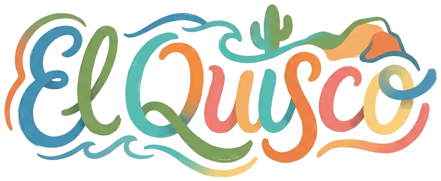
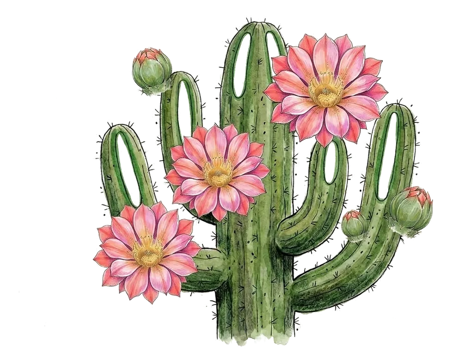
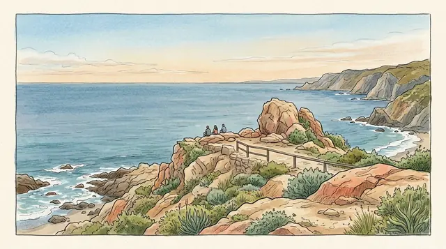
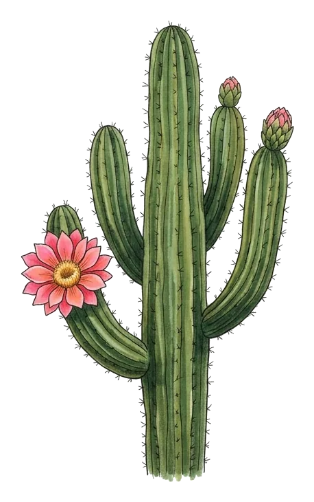
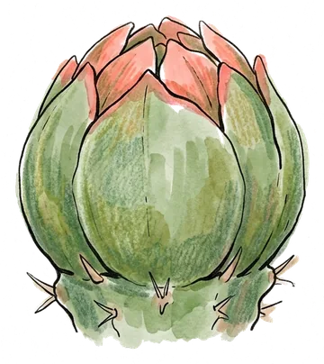
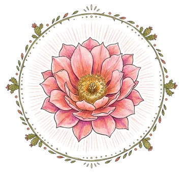
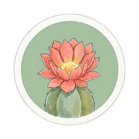

Humedal y bosque nativo
Humedal y bosque nativoHumedal El Batro
Referente territorial · visita por validar
Humedal urbano reconocido oficialmente en 2025. Cualquier visita debe respetar su protección.
Ver ficha de Humedal El BatroPropuesta académica de Agencia C.C.C. Las rutas y el Pasaporte Khiska están en etapa de validación. Qué está disponible

El Quisco no termina en la playa. Hay humedales, miradores, memoria y sabores que se descubren por capas.

¿Qué parte de El Quisco quieres descubrir? Elige una dimensión y te mostramos primero esos lugares.
Estos lugares son referentes del territorio. Cada ruta, con sus hitos, tiempos y accesos, se publicará cuando esté validada en terreno.
Humedal y bosque nativoReferente territorial · visita por validar
Humedal urbano reconocido oficialmente en 2025. Cualquier visita debe respetar su protección.
Ver ficha de Humedal El Batro Humedal y bosque nativo
Humedal y bosque nativoReferente territorial · visita por validar
Quebrada costera identificada como referente del territorio. Visita por validar.
Ver ficha de Quebrada Las Petras
Acantilados y mar profundoReferente territorial · visita por validar
Mirador costero identificado como referente del territorio. Visita por validar.
Ver ficha de Mirador Neptuno Memoria y sabores
Memoria y saboresReferente territorial · visita por validar
Localidad de la comuna asociada al Litoral de los Poetas. Visita por validar.
Ver ficha de Isla Negra Dimensión por confirmar
Dimensión por confirmarReferente territorial · visita por validar
Sector rural de la comuna, mencionado en la identidad de El Quisco. Visita por validar.
Ver ficha de El Totoral Memoria y sabores
Memoria y saboresReferente territorial · visita por validar
Oficios del mar y cocina de caleta como parte de la experiencia. Visita por validar.
Ver ficha de La caleta
Khiska es la curiosidad hecha recorrido. Tu cactus registra lo que descubres: cada flor representa una ruta completa. No es una mascota ni un ranking: es tu registro personal.

Capullo cerradoRuta no iniciada Apertura parcialRuta iniciada
Apertura parcialRuta iniciada Flor abiertaUna ruta completada
Flor abiertaUna ruta completada
Beneficio señaladoSolo si existe un acuerdo local confirmadoLas historias de El Quisco las cuentan sus vecinos, oficios y visitantes. Aquí se mostrarán publicaciones reales y podrás proponer lugares para futuras rutas.

Última publicación de Instagram
Este espacio mostrará la publicación más reciente de la cuenta oficial. La integración está pendiente de acceso y permisos.
La agenda reúne actividades confirmadas del territorio, mes a mes.
Contenido pendiente
Aún no hay actividades confirmadas para este mes. Solo publicaremos fecha, lugar y responsable cuando estén confirmados.
Contenido pendiente
Aún no hay actividades confirmadas para este mes. Solo publicaremos fecha, lugar y responsable cuando estén confirmados.
Contenido pendiente
Aún no hay actividades confirmadas para este mes. Solo publicaremos fecha, lugar y responsable cuando estén confirmados.